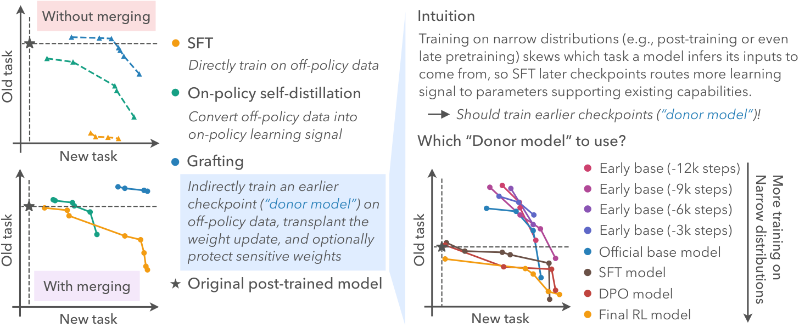
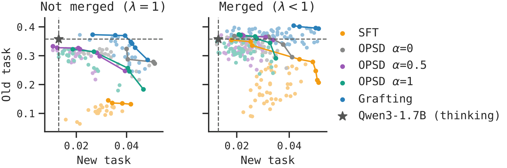

Off-Policy Merging Beats On-Policy
Self-Distillation for Continual Learning
Carnegie Mellon University

1. Off-policy = forgetting?
A long-standing goal of AI is a model that continually learns and improves itself. Today's models are heavily post-trained with RL, and the simplest way to teach them something new is supervised finetuning (SFT) on the new data. But SFT on such models often forgets and fails to generalize, so the conventional wisdom is that continual learning needs on-policy training, and many works try to make the data more on-policy, e.g., on-policy self-distillation (OPSD), Pedagogical RL, and SFT with sampling.
In practice, it is hard to balance on-policyness and data quality, while the data that carry new knowledge or capabilities are usually off-policy: new facts after the pretraining cutoff, expert demonstrations, and synthetic data for self-improvement. What if on-policy training is not necessary?
2. Model merging alone mitigates forgetting
Our premise is that simply merging the SFT model back toward the original post-trained model, θmerge = (1 − λ) θpost + λ θ′post, makes SFT a strong baseline. Without merging, neither SFT nor OPSD beats the post-trained model. With merging, SFT generalizes much better, and OPSD loses its edge over SFT despite its expensive on-policy sampling.

3. Grafting
Merging only scales the update down without changing its direction, so SFT was learning something useful. It hurts because it interferes with existing capabilities.
Where does the interference come from? Training on narrow distributions (e.g., post-training, or even late pretraining) skews which task a model infers its inputs to come from (Kotha et al., 2024). So finetuning later checkpoints routes more of the new learning signal to the parameters that support existing capabilities. This suggests learning the update on an earlier checkpoint instead. But how?
Task arithmetic (Ilharco et al., 2023) shows that an update need not be derived from the model it is applied to. Based on this, we change where the update is learned and how it is applied. We call the method grafting:
- learn the update on an earlier donor model θdonor;
- scale the weight update by λ and apply it to the post-trained model;
- optionally, mask the most sensitive weight directions (estimated with the Fisher information on old-task data) when the new data distribution is far from the post-trained model.
θ(λ, ρ) = θpost + λ · Mρ ⊙ (θdonor-ft − θdonor)
Here θdonor-ft is the donor after finetuning on the new data, and the mask Mρ zeroes the top-ρ fraction of Fisher-weighted directions of the update. Masking as few as ρ ≤ 1% of directions is enough.
4. Which donor model?
We want a donor that is early enough to see less interference, but late enough to stay close to the final model. OLMo-3 releases many intermediate checkpoints, which lets us study this. Each post-training stage (SFT, DPO, RL) makes the model harder to finetune, and the best donor sits before the end of pretraining.


5. Results
Across distillation from expert traces, self-improvement with Pedagogical RL, and knowledge injection, grafting beats both SFT and OPSD on new and old tasks, without expensive on-policy sampling. We assume access only to the data, not to the weights or logits of a stronger teacher. New-task performance is measured on held-out data from the new task; old-task performance is the mean over AIME 2024, AIME 2025 and HMMT 2025.
Distillation from expert traces


Self-improvement with Pedagogical RL

Knowledge injection

6. Takeaways
Together, our results suggest that on-policyness is not a necessity for continual learning. Since continual learning applications often involve off-policy experiences, we hope our work inspires more effort on making off-policy training generalize better.